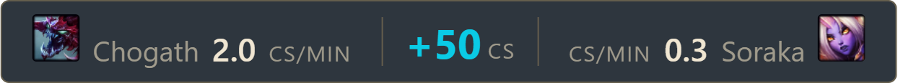
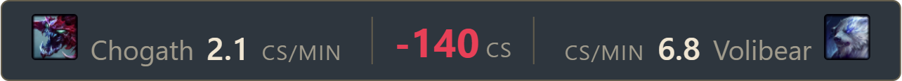
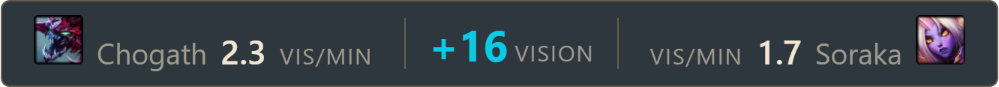
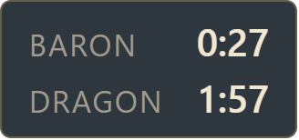
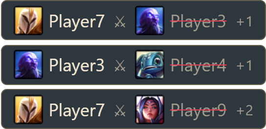
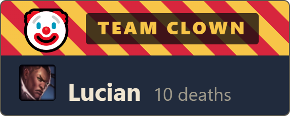
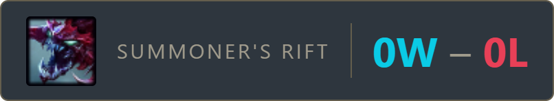
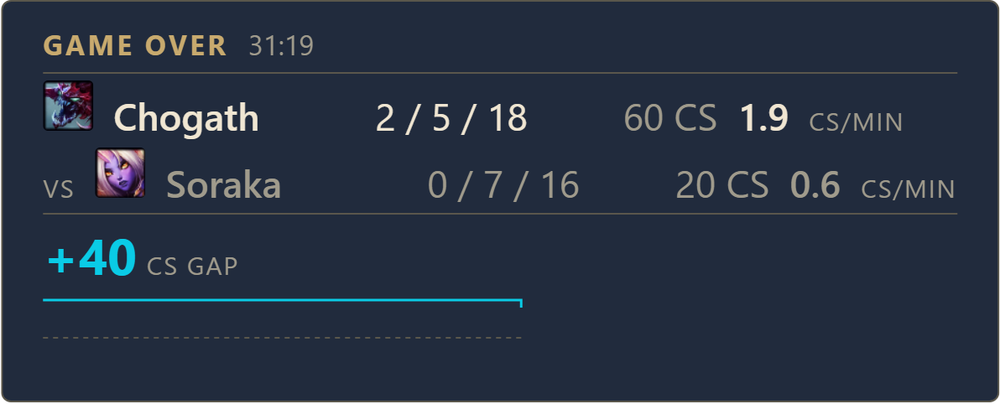

Live lane stats for your League stream
Crabwise draws your CS and vision against your opponent, objective timers, a kill feed and an end-of-game recap over your OBS scene. It is free, and it runs only on your PC.
Windows 10 and 11. The installer is not code-signed, so Windows will warn you. Here is what to expect.
What it puts on your stream
-
CS against your lane opponent
Your CS per minute next to your opponent's, and the gap between them. In the default theme it turns cyan when you are 20 or more ahead and red when you are 20 or more behind. A small line shows how the gap has moved. Crabwise picks your opponent, or you can choose one. It hides itself for supports and in ARAM, where CS says little.


-
Vision against the enemy in your role
Your vision score per minute against the player in your role on the other team. It exists for supports, whose CS comparison would be noise. It is off until you turn it on under Widgets, because it works for every role.

-
Objective timers
Respawn countdowns for Dragon, Elder and Baron, started from kills Crabwise actually saw. Nothing is predicted, so a timer only appears once there is something to count from.

-
Kill feed
Recent champion kills with portraits. It is capped, so starting Crabwise mid-game does not dump half an hour of old kills onto your stream.

-
Award cards
Ten cards that rotate through the match, like Team Clown for the most deaths. You can exempt yourself.

-
Session record
Your wins and losses for the session, with the game mode and your last champion. It stays up between games. You mark each result from the tray, because League does not reliably report who won.

-
End-of-game summary
A final scoreboard and lane comparison when the match ends, held on screen for as long as you choose.

There are five themes, a custom accent colour, a size for each widget, and a layout editor that shows the real overlay while you drag things around.
Set it up in OBS
- Install Crabwise Start it. It lives in your system tray.
- Copy your overlay URL It is on the Setup screen.
- Add a Browser source In OBS, paste the URL and set the size to match your canvas.
Check it worked with the test pattern button on the Setup screen. Four corner marks appear on the overlay for two minutes, with no game running, and they should sit on the edges of your source. Your URL contains a key that is unique to your install, so keep it off stream. The full setup guide covers the rest, including starting with Windows.
What it does on your computer
- It reads one thing
- The Live Client Data API that the League client serves on your own machine during a match. It never reads game memory, injects code or hooks the game.
- It only listens locally
- Its server is bound to your machine, and every install has its own key, so other pages on your computer and other devices on your network cannot read your match data.
- It sends almost nothing out
- One small file request a day, for objective respawn times. No identifiers, no account name and no match data go with it, and you can switch it off.
- It has no tracking
- No analytics, no crash reporting, no account and no server. Your match data goes from your machine to your own OBS and stops there.
Do not take this page's word for it. Resource Monitor, which is already part of Windows, shows what Crabwise connects to while it runs. The steps take about a minute.
Questions
Why does Windows warn me?
The installer is not code-signed, so Windows has no publisher to show you and says so. The warning means that and nothing more. The README has the steps to continue, and how to check what the app does first.
My antivirus blocked it
AVG and Avast hold back programs that are both unsigned and rare, which every new release is. You may see a grey box saying Windows cannot access the specified device, path or file. Adding an exception fixes it, and the README shows how. It happens less as more people install a release.
Does it show my rank or LP?
No. The game data Crabwise reads does not include them.
Which roles is it for?
The CS bar is for lane roles and hides itself for supports and in ARAM, unless you pick an opponent for it. The vision bar is there for supports, and works in any role once you turn it on.
Does it cost anything?
No. Crabwise is free and always will be.